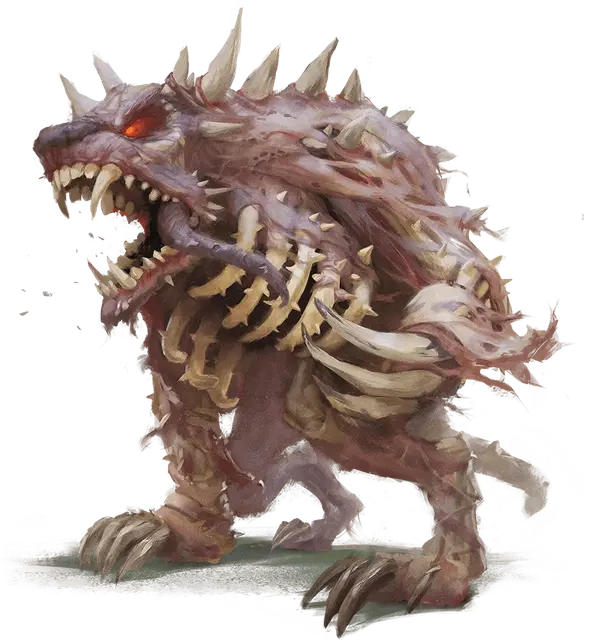

Анхолокс
Anhkolox
Огромная Нежить, нейтрально-злая

Класс Доспеха 15 (природный доспех)
Хиты 157 (15к12 + 60)
Скорость 50 футов
| мод | спас | ||
|---|---|---|---|
| СИЛ | 22 | +6 | +6 |
| ЛОВ | 11 | +0 | +0 |
| ТЕЛ | 18 | +4 | +4 |
| мод | спас | ||
|---|---|---|---|
| ИНТ | 4 | −3 | −3 |
| МДР | 14 | +2 | +6 |
| ХАР | 2 | −4 | −4 |
Навыки Восприятие +6
Иммунитет к урону яд
Иммунитет к состояниям испуг, истощение, отравление, очарование
Чувства тёмное зрение 60 футов, пассивное Восприятие 16
Опасность 9 (5000 опыта)
Бонус мастерства +4
Особенности
Необычная природа. Анхолокс не нуждается в воздухе, еде, питье и сне.
Действия
Мультиатака. Анхолокс совершает две атаки Когтями и одну Захватывающим разрыванием.
Коготь. . Рукопашная атака оружием: +10 к попаданию, досягаемость 5 футов, одна цель. Попадание: 17 (2к10 + 6) колющего урона. Если цель — существо Большого или меньшего размера, она должна преуспеть в спасброске Силы Сл 18, иначе её оттолкнёт до 20 футов в горизонтальном направлении на выбор анхолокса.
Захватывающее разрывание. . Рукопашная атака оружием: + 10 к попаданию, досягаемость 5 футов, одна цель. Попадание: 23 (5к6 + 6) колющего урона, и если цель - существо Большого или меньшего размера, она должна преуспеть в спасброске Силы Сл 18, иначе будет заключена в грудную клетку анхолокса и станет схваченной (Сл высвобождения 18). Пока цель схвачена, она опутана, и анхолокс не может использовать Захватывающее разрывание на другую цель.
Описание
Анхолоксы — злобная Нежить, созданная из костей медведей и других зверей. Их зазубренные кости скрипят и трещат, часто принимают, казалось бы, невозможными вид. У анхалоксов сильны инстинкт защиты своей территории и хищное желание охотиться и пожирать живую добычу. Они передвигаются на четырех ногах и поднимаются на задние лапы, когда настигают добычу. Когда они нападают, они бьют противника когтями, при этом с удовольствием сталкивая его в ямы, полные заострённых костей. Также их зазубренная грудная клетка может распахнуться, как охотничий капкан, чтобы затем плотно обхватить жертву.